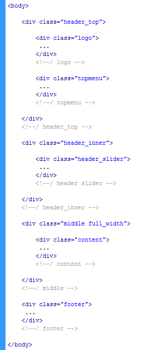
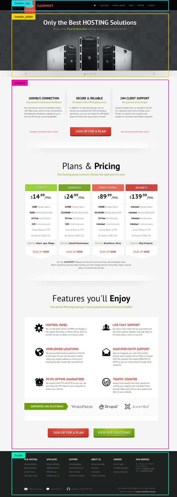
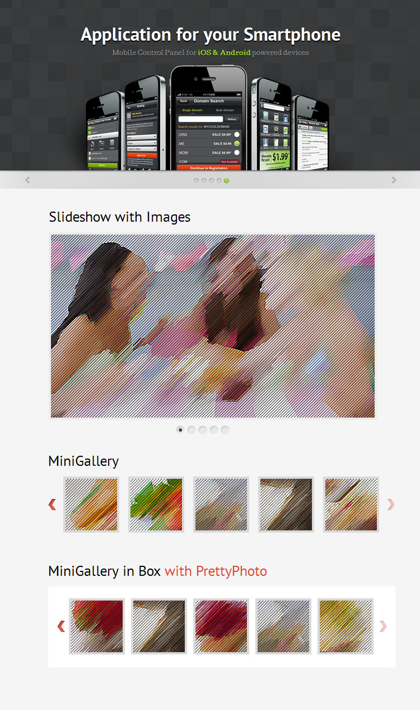
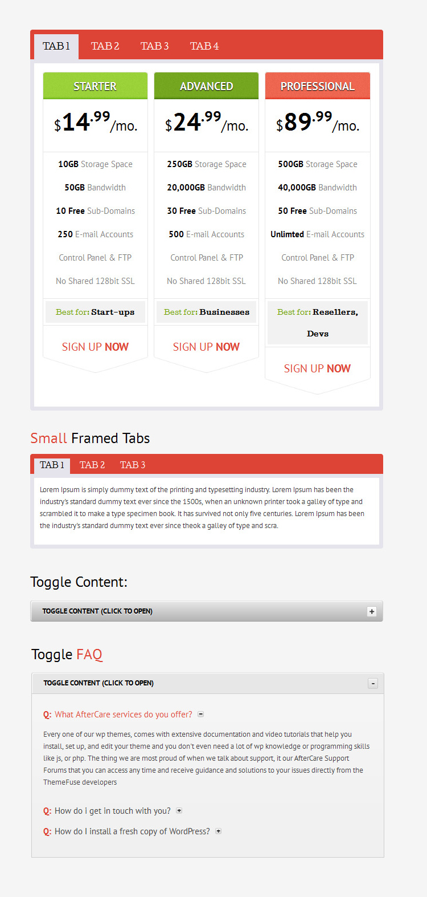
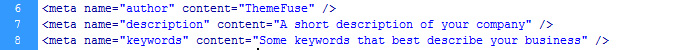

Thanks for purchasing this template, in this way supporting our efforts of bringing premium quality design and coding to you. This file contains general usage terms but also some useful information about the files included in the archive. If you have any questions about the theme please feel free to post on our dedicated support forum. We would love to hep you.
The basic structure of the pages of the theme is presented in the picture below. As you can easily see, we have a couple of main divs: the header_top (containing the logo and the top main menu), the header_inner (with the animated slider), the middle (containing the content), and finally the footer (with the footer links and social networking buttons)
Next is the index page where you can find the visual representation of the HTML structure.
On the CSS side, we load different css files depending on the page that loads.
Open the style.css file form the root folder and search h1 until you find the color property in the file. Its on line 506 and it looks line this:
h1, h2, h3, h4, h5, h6 {
color:#040404;
line-height:1.2em
}
Change the color with the one you want and hit save. Note that you’ve changed the color to all the headings (h1, h2, h3, h4, h5 and h6). If you want to change only the h1 color, you have to separate the h1 and give it another color. The css should look like this.
h2, h3, h4, h5, h6 {
color:#040404;
line-height:1.2em
}
h1 {
color:#custom_color;
line-height:1.2em
}
Now, lets say we wanted h1 to poin to http://google.com. At this point the h1 looks like this:
<h1>Shortcodes: Typography & paragraph styles</h1>
To make it point to a specific URL the h1 must look like this:
<h1><a href=”http://www.google.com”>Shortcodes: Typography & paragraph styles</a></h1>
You can make changes to the css to any elements. You just need to know the name of the element or div either by using FireBug or by opening the HTML and then search for that element in the css. Piece of cake!
This template imports different js files for the different sliders, lightboxes and interactive tabs from the homeplage and the rest of the pages. All the js is built around JQuery. What follows are some examples where jQuery was used:
Sliders
Tabs and toggles
Contact form
In the root folder of the file you’ll find a sendmail.php file. This file takes care of the contact form from the contact us page. Even if the verifications of the form is made by js, this file will not work if you are not uploading it on your server. It needs the PHP server from your host in order to run.
You need to change 2 things before you upload it on your server: the name of your blog, and the email you want the contact form to be sent to. To do this modifications, open the sendmail.php and edit lines 5 and 6 from the file.
If you want to add another input field in the html file, you don’t need to edit the sendmail.php at all, just open the html page where the form is, add another input and if you want that input to be a mandatory field, you have to add the css=”required”. Note that this new input has to have name=”[example]“ and id=”[example]“
Twitter widget
We have set up our twitter account there for demo purposes. All you need to do is change it with your own. You can do that on line 163 and 164 in the shortcodes-widgets.html file. On line 163 you will find (var twitter_username = 'themefuse';), themefuse needs to be changed with your twitter username, and on line 164 (var items = 5;) you can change the number of twitts the widget will display.
Important:
- Note that this will work only when it is on your server, exactly like the contact form.
- You need to have the CURL extension activated in PHP
- The cache folder from the twitter folder needs to have 777 permission
In order to improve your search engine ranking, and thus enable your web site to appear among search results, please don’t forget to change the description and keywords with your own.
As a best practice, the keywords from the meta tag are words that you should use in the texts from the page.
PSD Files
We’ve included all the psd files designed for the template and used to create the HTML. This files are usually used to create proposals for clients or for modifying different parts of the HTML template.
Fonts
We’ve used one Google web font in some of the the titles on all of the pages:
- PT Sans (search for PT Sans in the Google web fonts library)
Once again, thank you so much for purchasing this template. As we said at the beginning, we'd be glad to help you if you have any questions relating to this template, please come to our dedicated support forum. We would love to help you.
ThemeFuse